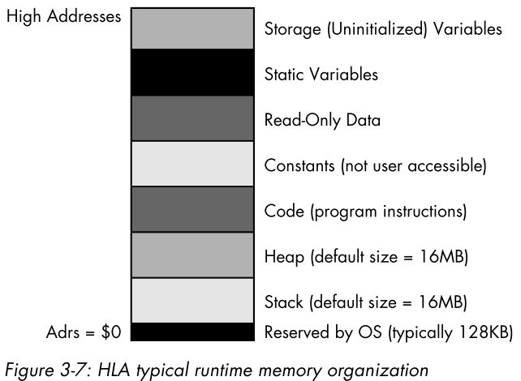

Contents
需要操作的数据存放在内存中。
根据寄存器中保存的内存地址来获取/存放对应内存的数据。
mov([eax], al);
mov([ebx], al);
mov([ecx], al);
mov([edx], al);
mov([edi], al);
mov([esi], al);
mov([ebp], al);
mov([esp], al);
mov(&j, ebx);
mov(eax, [ebx]);
Warning
&操作符和C/C++中的不完全一样，它只对静态变量有用。
变址寻址支持好几种形式，但在经过编译后，生成的底层机器都是一样的。
mov(VarName[eax], al);
mov(VarName[ebx], al);
mov(VarName[ecx], al);
mov(VarName[edx], al);
mov(VarName[edi], al);
mov(VarName[esi], al);
mov(VarName[ebp], al);
mov(VarName[esp], al);
将 VarName变量的地址 加上寄存器中值，得到新的地址，再根据该地址到内存中获取数据。
Note
不是VarName变量的值，而是其地址。
Tip
该寻址方式尤其适用于C语言中的数组操作。
mov([ebx+constant], al);
mov([ebx-constant], al);
将ebx中的地址+/-常量，得到新的地址，再根据该地址到内存中获取数据。
mov(VarName[ebx+constant], al);
mov(VarName[ebx-constant], al);
将VarName的地址+/-constant+ebx，得到新的地址，再根据该地址到内存中获取数据。
mov(constant1[ebx+constant2], al);
mov([ebx+(constant1+constant2)], al);
mov(constant1[ebx-constant2], al);
mov([ebx+(constant1-constant2)], al);
VarName[IndexReg32*scale]
VarName[IndexReg32*scale+displcement]
VarName[IndexReg32*scale-displcement]
[BaseReg32+IndexReg32*scale]
[BaseReg32+IndexReg32*scale+displcement]
[BaseReg32+IndexReg32*scale-displcement]
VarName[BaseReg32+IndexReg32*scale]
VarName[BaseReg32+IndexReg32*scale+displcement]
VarName[BaseReg32+IndexReg32*scale-displcement]
BaseReg32表示任意的32位通用寄存器，
IndexReg32表示除ESP外的任意一个32位通用寄存器，
scale为比例因子，必须为常数1、2、4、8之一。
Tip
该寻址方式非常适用于大小为2、4、8字节的数组元素。
不要简单以为二维数组的访问是用该寻址方式实现的，实际上二维数组的访问比这还要复杂。
程序在载入到内存时，操作系统会将程序按不同的数据分割为几个段(section/segment)。
存放程序中的指令（机器码）。
在现代操作系统(Win, Unix, Linux, MacOS)中，代码段是只读的。
如果在程序运行时，尝试修改代码段中的数据会导致报错。
Tip
DOS操作系统就可以任意修改代码段中的内容。
HLA还可以通过以下伪操作码将数据存储到代码段中：
byte
word
dword
uns8
uns16
uns32
int8
int16
int32
boolean
char
mov(0, ax);
byte 0, 1, 2, 3;
add(bx, cx);
该段是专门用来存放声明的变量的，它也可以使用伪操作码。
其中声明的变量即可以初始化，也可以不用初始化。
static
b: byte := 0;
byte 1, 2, 3;
u: uns32 := 1;
uns32 5, 2, 10;
c: char;
char 'a', 'b', 'c', 'd', 'e', 'f';
bn: boolean;
boolean true;
由于伪操作码插入的数据没有对应的标识，所以不能直接对它们进行访问，不过可以通过变址寻址的方式来访问。
该段存放常量、表以及其它一些在程序执行中不可更改的数据，它也可以使用伪操作码。
该段中的变量都要初始化。
readonly
pi: real32 := 3.14159;
e: real32 := 2.71;
MaxU16: uns16 := 65_535;
MaxI16: int16 := 32_767;
readonly
roArray:byte := 0;
byte 1, 2, 3, 4, 5;
qwVal: qword := 1;
qword 0;
该属性允许在静态声明段（静态段、只读数据段、存储段）中声明变量，但并不为这些变量分配实际的存储空间，只需要将声明段中的当前地址分配给变量即可。
readonly
abcd: dword; nostorage:
byte 'a', 'b', 'c', 'd';
用来创建自动变量。由于该段中声明的变量是在运行时创建的，HLA不允许在该段中对所声明的变量进行初始化。
HLA将该段中声明的变量分配到栈存储段。
var
vInt: int32;
vChar: char;
静态段、只读数据段、存储段、var段在program和begin之间，可出现0到多次，且无顺序要求。
program demo;
static
i_static: int32;
var
i_auto: int32;
storage
i_uninit: int32;
readonly
i_readonly: int32 := 5;
statc
j: uns32;
var
k: char;
readonly
i2: uns8 := 9;
storage
c: char;
storage
d: dword;
begin demo;
<< code goes here >>
end demo;
align(integer_constant);
integer_constant必须为1、2、4、8、16之一。
align指令会将紧接其后的变量对齐到指定对齐常量的偶数倍地址上。
其原理就是用多余的字节来进行填充。
static
align(4);
dw: dword;
b: byte;
align(2);
w: word;
align(4);
dw2: dword;
w2: word;
b2: byte;
align(4);
dw3: dword;
Note
现代80x86CPU的缓存机制实际上处理了绝大部分的不对齐数据，
因为只有在快速访问相当关键的情况下才使用对齐指令。
(type newTypeName addressExpression)
类型强制转换操作符只是告诉编译器将指定的表达式作为特定的类型来处理，不做额外的事情。
mov((typ word byte_values), ax);
not((type byte [ebx]));
not((type dword [ebx]));
Warning
不要滥用类型强制转换操作。
mov(eax, (type dword byteVar));
上面这条语句会将byteVar后面三个字节的数据覆盖。
在布尔表达式中，HLA问题将寄存器作为无符号值来进行判断，但有时需要将其当作有有符号值来判断，这就需要进行寄存器类型强制转换。
08x86CPU通过ESP来控制栈。
push(reg16);
push(reg32);
push(memory16);
push(memory32);
pushw(constant);
pushd(constant);
push指令进行了如下的操作：
ESP := ESP - Size_of_Register_or_Memory_Operand (2 or 4)
[ESP] := Operand's_Value
pusha将所有16位寄存器入栈，主要用于DOS之类的16位操作系统中，在现代操作系统中很少用到。
popa则按照pusha相反的顺序出栈。
具体操作如下：
// pusha();
push(ax);
push(cx);
push(dx);
push(bx);
push(sp);
push(bp);
push(si);
push(di);
// popa();
pop(di);
pop(si);
pop(bp);
pop(sp);
pop(bx);
pop(dx);
pop(cx);
pop(ax);
pushad将所有32位寄存器入栈；pop按照pushad相反顺序出栈。
具体操作如下：
// pushad();
push(eax);
push(ecx);
push(edx);
push(ebx);
push(esp);
push(ebp);
push(esi);
push(edi);
// popad();
pop(edi);
pop(esi);
pop(ebp);
pop(esp);
pop(ebx);
pop(edx);
pop(ecx);
pop(eax);
pushf将16位EFLAGS寄存器入栈；popf按照pushf相反顺序出栈。
pushfd将32位EFLAGS寄存器入栈；popfd按照pushfd相反顺序出栈。
由于CPU是使用ESP来表示栈顶位置的，所以可以直接修改ESP的值来移除栈内数据。
push(eax);
push(ebx);
if (expression) then
add(8, esp); // remove unneeded EAX and EBX values
else
pop(ebx);
pop(eax);
endif
Warning
记住，要保持栈对准某个双字边界，因此在移除数据时，应该总是将4的偶数倍常量与ESP相加。
push(eax);
push(ebx);
// 将eax中的值保存到edx中
mov([esp+4], edx);
程序中动态（运行时）分配或者回收的存储区都分配在堆段。
HAL提供malloc和free来处理存储空间的分配和回收。
mem.alloc(Number_of_Bytes_Requested);
Number_of_Bytes_Requested为一个dword，指定了所需的存储区字节数。
mem.alloc会将该存储区的首字节指针给EAX寄存器。
// @size为HLA内置的编译时函数，
// 计算某个数据类型的数据宽度
// 它返回一个无符号整型常量
mem.alloc(@size(uns32));
mov(1234, (type uns32 [eax]));
mem.free(eax);
Note
如果使用mem.alloc分配内存失败，HAL会抛出ex.MemoryAllocationFAilure异常。
Note
最好使用mem.alloc为数组或者大的结构分配存储区。
mem.alloc实际分配的存储区会比参数中请求的要大一些，mem.alloc需要额外的空间来跟踪所分配/释放的区域。
inc(mem/reg); // 加1
dec(mem/reg); // 减1
mem.alloc(128);
for(mov(0, ebx); ebx < 128; inc(ebx)) do
mov(0, (type byte [eax+ebx]));
endfor;
mem.free(eax);
&符号只能获取静态变量的地址，而lea指令可以获取其它存储器对象的地址。
lea(reg32, Memory_operand);
lea指令的第一参数为32位寄存器，第二参数为任何合法的内存引用，可以使用任何合法的寻址方式，该指令会将指定存储单元的地址加载到寄存器中。
program Demo;
#include("stdlib.hhf")
static
b: byte; @nostorage;
byte 7, 0, 6, 1, 5, 2, 4, 3;
begin Demo;
lea(ebx, b);
for (mov(0, ecx); ecx < 8; inc(ecx)) do
stdout.put("[ebx+ecx]=", (type byte [ebx+ecx]), nl);
endfor;
end Demo;